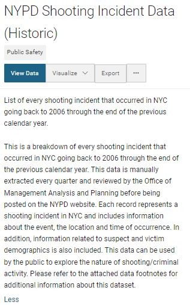

Shootings are witnessed by many New Yorkers but, according to the data, nothing happened. A lot of us worry about "nothing" every day.
NYC Open Data’s NYPD Shooting Incidents Data (Historic and Year to Date) introduces itself as a "list of every shooting incident that occured in NYC going back to 2006". This statement begins a cycle which can misrepresent facts, particularly when the data is used in relation to While no official definition exists, it is generally accepted that a mass shooting has 4 or more injured victims. mass shootings.
The following visualization shows the location of NYC mass shootings using these datasets. Incidents which no longer meet the criteria after critical analysis are identified with pulsing markers.
The dataset's  full description reassures that every shooting incident will be present in the data. It makes itself avaiable for "the public to explore the nature of shooting/criminal activity". Accepting this invitation should be done with extreme caution.
The above shootings don't appear in the dataset.
The description's closing sentence
"Please refer to the attached data footnotes for additional information about this dataset."
-Dataset's Description
alludes to why.
If users scroll, find, download, and open the PDF they'll discover footnotes
that contradict the dataset's previous claims.
"A shooting incident can have multiple victims involved and as a result duplicate
INCIDENT_KEY’s are produced. Each INCIDENT_KEY represents a victim but
similar duplicate keys are counted as one incident."
-Footnotes; Page 1
Footnote 3 reveals that this is not a dataset of shooting incidents, it's a dataset of shooting victims.
"Only valid shooting incidents resulting in an injured victim are included in this
release. Shooting incidents not resulting in an injured victim are classified
according to the appropriate offense according to NYS Penal Law"
-Footnotes; Page 2
Footnote 14
uncovers the reason why these incidents aren't included.
The dataset only reports the subset of victims who suffered physical injuries.
Exploring the dataset reveals that there are hundreds of records that change. These changes aren't updated. They're appended.
The impact of this discovery is available for review in the visualization below. It attempts to account for updated murder classifications, but cannot account for other discrepancies.

The footnotes stated that each row represents a victim. This incident has one row.
With an identical age, sex, and race, these victims are not represented as individuals; they are compressed as data. This occurs for every incident regardless of how many people were involved, injured, or murdered.
The documentation fails to announce a critical limitation: It is impossible to determine how many people are represented in the data.
As a whole, the dataset ignores context by not admitting that the previously referenced instances qualify as a shooting incident in the public's mind.
It fetishize size and doubles down on the claim to be "every shooting incident".
It inflates its technical and scientific capabilities by presenting itself as a tool to "explore the nature of shooting/criminal activity."
This is not every shooting incident.
This is
"Big Dick Data projects ignore context, fetishize size,
and inflate their technical and scientific capabilities."
-Data Feminism; Catherine D’Ignazio and Lauren F. Klein
Big Dick Data.